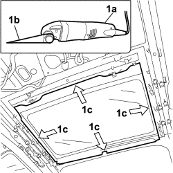
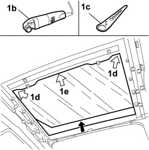
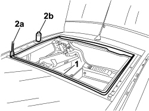
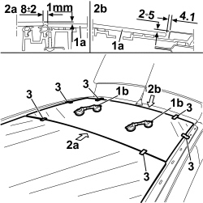
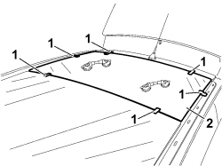
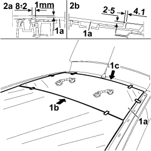
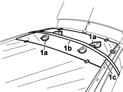

7030B48 SLIDING ROOF REAR FIXED GLASS PANEL - R.R.
- Path
- Procedures > 70 FITTINGS > 7030 SUN ROOF/GLASS PANEL > 7030B SLIDING ROOF > 7030B48 SLIDING ROOF REAR FIXED GLASS PANEL - R.R.
- Kind
- repair procedure (removal / refitting; the operation number is the code)
- Applies to
- all engines; all production periods
- Interactive page
- https://sloeber94.github.io/elrnDB-fCrm/en/#/194000984
Applies to: all engines; all production periods
 Removing
Removing
 Refitting
Refitting- Turn the ignition key to the OFF position.
- Disconnect the negative battery terminal.
Description | Connector | |
|---|---|---|
BATTERY |
(Both)
Op. 7065C33 SUN BLIND WITH COURTESY MIRROR AND COURTESY LIGHT ONE LH OR RH R R
(all)
Op. 7065C30 GRAB HANDLE (ONE) LEFT, RIGHT OR CENTRE PASSENGER COMPARTMENT INTERIOR - R.R
Op. 7040E51 FRONT MODULAR COURTESY LIGHT ASSEMBLY - R R FOR VERSIONS WITH SUN-ROOF
Op. 7040E46 REAR COURTESY LIGHT ASSEMBLY - R R
Op. 7040B26 LOAD PLATFORM COVER BLIND - R+R
FOR VERSIONS WHERE IT IS FITTED
Op. 7040B42 PROTECTION GRILLE FOR ANIMAL TRANSPORT - R and R
(Both)
Op. 7040B44 PROTECTIVE GRILL ATTACHMENT ONE R R
FOR ALL VERSIONS
(Both)
Op. 7040H30 FRONT PILLAR TRIM (ONE), LEFT OR RIGHT - R.R.
(Both)
Op. 7040L44 REAR DOOR RUNNING BOARD (ONE), LEFT OR RIGHT - R.R.
(Both)
Op. 7040H36 CENTRE PILLAR LOWER ELEMENT (ONE), LEFT OR RIGHT - R.R
(Both)
Op. 7040H38 CENTRE PILLAR UPPER ELEMENT (ONE), LEFT OR RIGHT - R.R
(Both)
Op. 7040H42 REAR PILLAR TRIM (ONE), LEFT OR RIGHT- R.R
(Both)
Op. 7040H50 REAR PANEL (ONE), LEFT OR RIGHT - R.R
Op. 7040H16 ROOF PANEL LINING FOR VERSIONS WITH SUN ROOF - R.R
Op. 7030B41 SLIDING ROOF ASSEMBLY OUTER MOULDING (ONE) - R R
Op. 7030B91 SLIDING ROOF ASSEMBLY CENTRAL CROSS MEMBER - R R
Op. 7030B37 FIXED GLASS BLIND - R.R
Op. 7030B78 SUN ROOF BLIND MOVEMENT MOTOR - R.R.
Op. 7030B92 REAR SLIDING ROOF CROSS MEMBER - R R
1. Use a Fein vibrating cutter (1a) and Fein blade 081 (1b) to cut the sealant on four sides (1c).

Applies to: all engines; all production periods
1. Lift the fixed lens (1a) about 10 cm and use a vibrating cutter (1b) and Fein blade 194 at a speed setting of 3 to cut the sealant in the corners (1d) and along side (1d) and remove the fixed lens.

Applies to: all engines; all production periods
Refitting
Removing1. Use appropriate equipment to cut and level the sealant strip to leave a thickness between 0.25 and 1 mm in the frame housing compartment.
Thoroughly clean the frame housing compartment on the body with compressed air and degrease thoroughly with heptane
Component | Type | Description | Classification | Qty. | Validity |
|---|---|---|---|---|---|
Sliding roof fixed transparent housing | - | Activator for PUR | - | - |
2. Apply the glass adhesion promoter (primer) (2b) to the site of the old sealant strip using the wick (2a) supplied in the Kit.

Applies to: all engines; all production periods
- Clean the new lens around the screen-printed perimeter using heptane (bonding track).
1. Apply sucker handles (1b) to glass (1a) and carry out a test installation, then centre the glass in its seat carefully.
2. Also check the reciprocal position of the glass (1a) along the front profile (2a) and the rear profile (2b): chek the measurements are as shown in the details in the figure. Adapt the support spacers if necessary.
3. After centring the glass correctly, mark the reciprocal position between glass and seat using adhesive tape sections.

Applies to: all engines; all production periods
1. Cut the adhesive tape strips.
2. Remove the window glass.

Applies to: all engines; all production periods
- Use a pneumatic gun to extrude a sealant strip with basic minimum size of 7 mm, height of 14 mm, triangular cross section to the site of the old sealant in the fixed lens housing.
- Place the windscreen in the housing, with the assistance of a second mechanic, straight after applying the sealant and let it bed in.
1. Position glass (1a) correctly along the front profile (1b) and rear profile (1c) (respect the measurements shown in the details in the figure).

Applies to: all engines; all production periods
1. With the aid of suckers (1a) and belts (1b), exercise uniform pressure over the fixed lens to maintain the correct position of glass (1c) as indicated above.

Applies to: all engines; all production periods
- Before refitting the vehicle interior elements, check that there are no infiltration points by carrying out a water leakage test.
FOR ALL VERSIONS
Op. 7030B92 REAR SLIDING ROOF CROSS MEMBER - R R
Op. 7030B78 SUN ROOF BLIND MOVEMENT MOTOR - R.R.
Op. 7030B37 FIXED GLASS BLIND - R.R
Op. 7030B91 SLIDING ROOF ASSEMBLY CENTRAL CROSS MEMBER - R R
Op. 7030B41 SLIDING ROOF ASSEMBLY OUTER MOULDING (ONE) - R R
Op. 7040H16 ROOF PANEL LINING FOR VERSIONS WITH SUN ROOF - R.R
(Both)
Op. 7040H50 REAR PANEL (ONE), LEFT OR RIGHT - R.R
(Both)
Op. 7040H42 REAR PILLAR TRIM (ONE), LEFT OR RIGHT- R.R
(Both)
Op. 7040H38 CENTRE PILLAR UPPER ELEMENT (ONE), LEFT OR RIGHT - R.R
(Both)
Op. 7040H36 CENTRE PILLAR LOWER ELEMENT (ONE), LEFT OR RIGHT - R.R
(Both)
Op. 7040L44 REAR DOOR RUNNING BOARD (ONE), LEFT OR RIGHT - R.R.
(Both)
Op. 7040H30 FRONT PILLAR TRIM (ONE), LEFT OR RIGHT - R.R.
FOR VERSIONS WHERE IT IS FITTED
(Both)
Op. 7040B44 PROTECTIVE GRILL ATTACHMENT ONE R R
Op. 7040B42 PROTECTION GRILLE FOR ANIMAL TRANSPORT - R and R
FOR ALL VERSIONS
Op. 7040B26 LOAD PLATFORM COVER BLIND - R+R
Op. 7040E46 REAR COURTESY LIGHT ASSEMBLY - R R
Op. 7040E51 FRONT MODULAR COURTESY LIGHT ASSEMBLY - R R FOR VERSIONS WITH SUN-ROOF
(all)
Op. 7065C30 GRAB HANDLE (ONE) LEFT, RIGHT OR CENTRE PASSENGER COMPARTMENT INTERIOR - R.R
(Both)
Op. 7065C33 SUN BLIND WITH COURTESY MIRROR AND COURTESY LIGHT ONE LH OR RH R R
- Connect the negative battery terminal.
Description | Connector | |
|---|---|---|
BATTERY |
Topics linked from this page (20)
- 7030B37 FIXED GLASS BLIND - R.R
- 7030B41 SLIDING ROOF ASSEMBLY OUTER MOULDING (ONE) - R R
- 7030B78 SUN ROOF BLIND MOVEMENT MOTOR - R.R.
- 7030B91 SLIDING ROOF ASSEMBLY CENTRAL CROSS MEMBER - R R
- 7030B92 REAR SLIDING ROOF CROSS MEMBER - R R
- 7040B26 LOAD PLATFORM COVER BLIND - R+R
- 7040B42 <x>PROTECTION GRILLE FOR ANIMAL TRANSPORT - R&R</x>
- 7040B44 PROTECTIVE GRILL ATTACHMENT ONE R R
- 7040E46 REAR COURTESY LIGHT ASSEMBLY - R R
- 7040E51 FRONT MODULAR COURTESY LIGHT ASSEMBLY - R R FOR VERSIONS WITH SUN-ROOF
- 7040H16 ROOF PANEL LINING FOR VERSIONS WITH SUN ROOF - R.R
- 7040H30 FRONT PILLAR TRIM (ONE), LEFT OR RIGHT - R.R.
- 7040H36 CENTRE PILLAR LOWER ELEMENT (ONE), LEFT OR RIGHT - R.R
- 7040H38 CENTRE PILLAR UPPER ELEMENT (ONE), LEFT OR RIGHT - R.R
- 7040H42 REAR PILLAR TRIM (ONE), LEFT OR RIGHT- R.R
- 7040H50 REAR PANEL (ONE), LEFT OR RIGHT - R.R
- 7040L44 REAR DOOR RUNNING BOARD (ONE), LEFT OR RIGHT - R.R.
- 7065C30 GRAB HANDLE (ONE) LEFT, RIGHT OR CENTRE PASSENGER COMPARTMENT INTERIOR - R.R
- 7065C33 SUN BLIND WITH COURTESY MIRROR AND COURTESY LIGHT ONE LH OR RH R R
- A001 BATTERY